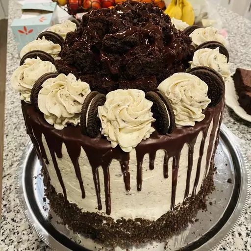

Black Magic Chocolate Cake

Description
I've made this recipe dozens of times over the last 10-15 years and every time I serve it, everyone always says it's the best chocolate cake they've ever had. It's extremely moist and dense, about as close as you can get to a brownie while still calling it cake. It's super easy to make. Everytime I have any other chocolate cake, it disappoints compared to this.
Ingredients
- 1 ¾ cups all-purpose flour
- 2 cups white sugar
- ¾ cup unsweetened cocoa powder
- 2 teaspoons baking soda
- 1 teaspoon baking powder
- 1 teaspoon salt
- 2 eggs
- 1 cups strong brewed coffe
- 1 cup buttermilk
- ½ cup vegetable oil
- 1 teaspoon vanilla extract
Steps
-
Preheat oven to 350 degrees F (175 degrees C). Grease and flour two 9 inch round cake pans or one 9x13 inch pan.
-
In large bowl combine flour, sugar, cocoa, baking soda, baking powder and salt. Make a well in the center.
-
Add eggs, coffee, buttermilk, oil and vanilla. Beat for 2 minutes on medium speed. Batter will be thin. Pour into prepared pans.
-
Bake at 350 degrees F (175 degrees C) for 30 to 40 minutes, or until toothpick inserted into center of cake comes out clean. Cool for 10 minutes, then remove from pans and finish cooling on a wire rack. Fill and frost as desired.